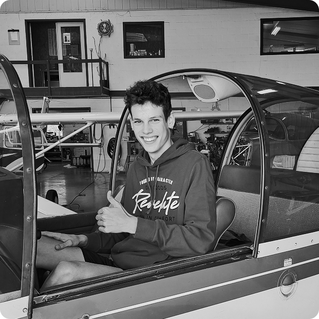

I'm currently studying Computer Graphics at Haute École Albert Jacquard. With a background in automation and a passion for UI/UX, I enjoy working on a wide range of digital projects, from frontend development to design thinking. I focus on attention to detail, always meet deadlines, and love experimenting with new tools and ideas. I'm also a licensed drone pilot and I like to bring my personal touch to every project I take on. Feel free to reach out if you’d like to collaborate or just say hi!
My projects
Prux
This case study traces the progress of a school project aimed at redesigning the layout of a room to improve the student experience, fostering a more functional rest environment.
Dataplay
This case study traces the progress of a school project designed to teach us how to retrieve data from a JSON and display it in the right place on a web page.
Design Fiction
This school project follows a "what if" approach. What if a current technology evolved soon? I chose drones as my topic. I explore their possible future features.